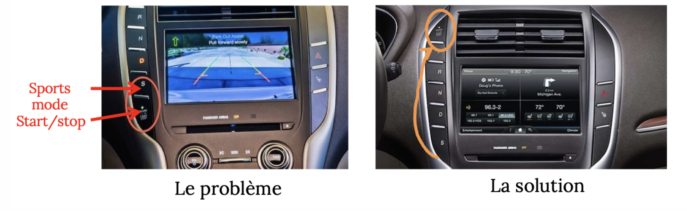
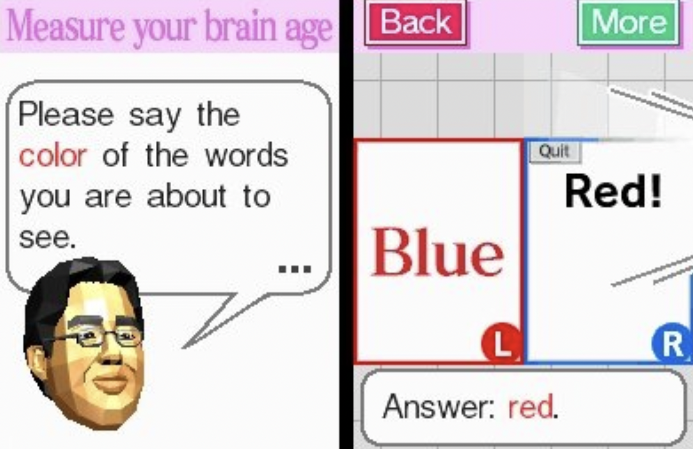
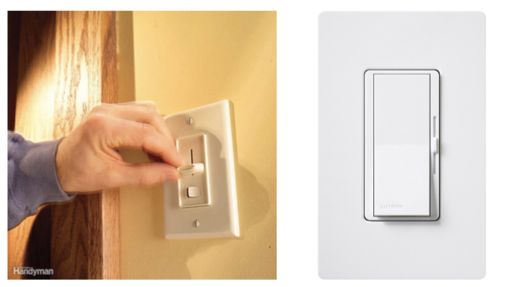
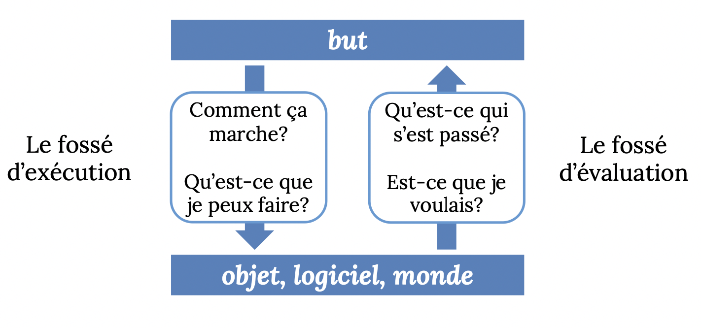
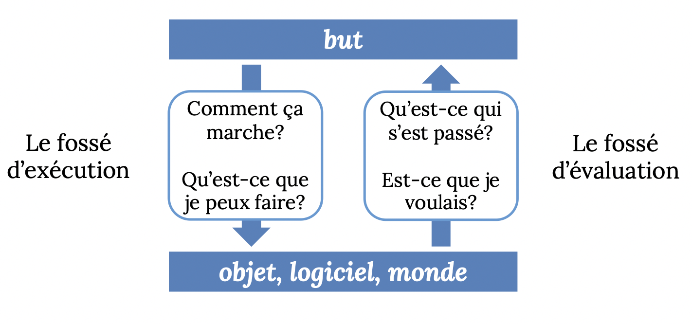
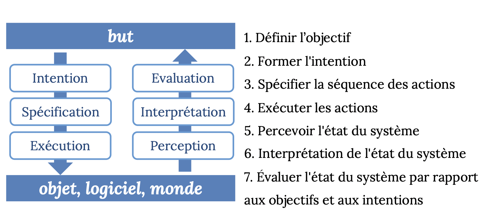

HMI Study - Midterm
Adapted from slides of Prof. Bessmeltsev, IFT2905
Intro
Autres types d'interfaces
- Interface humain-objet
- Interface humain-produit
Definition: what is a Human-Machine-interface?
In industrial settings, HMIs can be used to:
- Visually display data
- Track production time, trends, and tags
- Oversee KPIs
- Monitor machine inputs and outputs
- And more
Common uses of HMIs
HMIs communicate with Programmable Logic Controllers (PLCs) and input/output sensors to get and display information for users to view.
HMI screens can be used for a single function, like monitoring and tracking, or for performing more sophisticated operations, like switching machines off or increasing production speed, depending on how they are implemented.
La question centrale:
Supposons que:
- l’utilisateur sait ce qu’il veut faire
- l’objet en est capable
Est-ce que l’interface permet à l’utilisateur de faire ce qu’il veut?
plus précisement:
Dans quelle mesure l'interface permet-t- elle à l'utilisateur de faire ce qu'il veut?
Definition: Usability
The degree to which a product can be used by specific users, to accomplish precise goals with effectiveness, effiency and satisfaction.
- Effectiveness: the product allows the user to reach the end goal that was expected.
- Efficiency: the user reaches the end result with as little effort or little time as possible.
- Satisfaction: comfort from the user/positive (subjective) feedback about the experience.
The importance of usability
The product sells better
- The iPhone vs. IBM Simon
Unusable websites are often abandoned
- Source of frustration and often source of failure
Badly used objects can be dangerous

The responsibility of making something usable
...goes to the designer
Mental and physical capabilities of a human user
- la perception (visuelle, tactile, auditive)
- la mémoire
- l’interprétation des informations cognitifs
- Prise des décisions
- la motricité, i.e., d’interagir physiquement avec les machines
(all but the last one )
Examples of theoretical models that simplify and formalize the process of conception that takes into account these cognitive and motor processes (from above)

Getting to know the user
- les objectifs
- les connaissances
- la terminologie
- la façon de travailler
- les éventuelles limitations de perception
How do we find this out?
- Reflection: think about how hanita would use this UI
- Observation: observe hanita using her apps
- Surveys: ask hanita why she do this
- Usage scenarios: imagine hypothetical hanita with hypothetical UI
Development and usability
Analysing to better...
- Understand human performance

- Getting to know the user
However, creating a good UI from the first go is highly unlikely
...Enter: iterative development
Design → Prototype → Evaluation
Why is it so hard to conceive good UIs?
- You're not the user and can't put yourself in their shoes as a programmer
- The user is always right: recurrent problems are blamed on the system
- ...But the user isn't always right: users aren't always designers. They don't always know what's best for them.
Performance humaine
Perception, mémoire, motricité
MOST problems with interfaces are due to the designer not recognizing the limitations and tendency to be wrong of humans
→ Mistake because of the DESIGN, NOT human error
The myth of human error
Most humans are imperfect & inprevisible
- Bad memory
- We don't see things that are right there
- We're really confused
- We tire ourselves and become annoying
What's actually to blame
Functionality problem : what are the functions of the object? are they doing what i want them to do?
Visibility: what's the current mode? control sequence: what control sequence must I do to obtain what I want?
Feedback: how do I know if my operations went well? (!!!!)
- How do i know my button clicked properly??
Goals of UX (User eXperience)/Usability

✨✨✨✨✨✨✨✨✨✨✨✨✨✨✨✨✨✨✨✨✨✨✨✨✨

EESUSM → Efficacity, Efficiency, Security, Usability, Simplicity of Learning, Memorability
EEEEE sus MMMMMMMMM
✨✨✨✨✨✨✨✨✨✨✨✨✨✨✨✨✨✨✨✨✨✨✨✨
Definition: Usability
The degree to which a product can be used by specific users, to accomplish precise goals with effectiveness, effiency and satisfaction.
- Effectiveness: the product allows the user to reach the end goal that was expected.
- Efficiency: the user reaches the end result with as little effort or little time as possible.
- Satisfaction: comfort from the user/positive (subjective) feedback about the experience.
- Simplicity of learning: the ease at which the users get used to and use the surface
- Visibility: the ease to see and understand the state of the system
- Errors: measure of the quantitity of these, as well as their impact
- Memorability : the capacity to remember how to use the interface
Where do designers go wrong?
- They fail to understand the range/variety of uses and their limitations
- They don't foresee the different contexts for use
- They don't provide enough detailed instructions of how to use it
- They don't communicate what was done, or don't provide any feedback at all (lack of feedback)
Why is design so hard?
Tasks are complex and hard to define
- the machine doesn't understand the goal of the user
- how to distribute the tasks/responsibilities between the machine and the user? (!!!)
Tasks are complex and unpredictable
- Users are often indecisive
- They use things in unpredictable ways
Tasks are getting more and more complex
- The amount of things to control is increasing constantly(!)
- Feedback is more complex, less natural/intuitive
- Errors are more serious/have more ramifications
The pressure of the market
Adding functionalities isn't expensive (lies but ok)
Adding controls/feedback is tho
Design time is expeez
Some consumers prefer a cost/visual design(?)
Definition: Performance & Human cognition
The set of mental and physical capacities linked to cognitive processes
an actual example: At which speed can we press a button?
not an example: how long can we survive at -24 C? (unrelated to us being mentally capable or not.)
Definition: Cognition
The set of mental processes that contribute to the functionning of knowledge
- Acquiring knowledge
- Using knowledge
Different types of knowledge:
- Know-how (procedure)
- Technical knowledge (the facts)
- Languages
- etc.
Components of cognition
- Perception
- Language
- Learning
- Memory
- Problem-solving
- Decision-taking
- Attention
Man vs. Computer:
Pros of hooman:
Détection de signal sous bruit
Reconnaissance de
configurations (p.e., scènes)
complexes
Concentration sur l'essentiel
Adaptation à des situations
inattendues
Aptitude à apprendre
Mémoriser des informations
cohérentes
Intuition
Pros of computah
- Détection/reconnaissance de signaux connus
- Réaction rapide et fiable aux signaux connus
- Supériorité si les problèmes peuvent être formulés algorithmiquement
- Mesurer et compter
- Stocker de grandes quantités de données incohérentes
- Répétition fiable et sans fatigue des opérations
Motor and sensorial systems
Systèmes sensoriels
- Équilibre et accélération (vestibulaire)
- Conscience du corps (proprioception, sens kinesthésique)
- Température (réception de chaleur)
Systèmes moteurs
- Bras, mains, doigts
- Tête, yeux
- Système vocal
- Jambes, pieds, orteils
- Mâchoire, langue
Model human processor (MHP): perceptuel (input), cognitif (processing), moteur (output)

Modèle informatique donnant une compréhension abstraite du cycle cognitif
- perception (input)
- traitement (processing)
- action (output)
Trois processeurs avec mémoire associée
Processeur perceptuel
Capteurs et tampons
- Processeur cognitif Travail sur contenu de la mémoire de travail
Processeur moteur
Génère des mouvements
Chaque processeur a un temps d'exécution associé Le temps d'exécution globale du système est la somme des trois
La perception de couleur

Implications pour la perception - lecture

Attention visuelle: summary
TLDR: you need to rly pay attention to not miss everything so you really have to keep this in mind for your users.
- Il y a des lacunes remarquables dans notre perception
L'interprétation humaine du champ visuel est plus restrictive/clairsemée que ne le suggère l'expérience subjective de "voir".
La perception des objets nécessite des ressources considérables
Attention is necessary to see change(!!!!)
Si l'attention est ailleurs, des changements peuvent être manqués
Stroop effect (like that lil game in brain age)

Principes de design
Facilité d’apprendre, visibilité, erreurs, efficience
 <- pretty much the holy bible by our lord n savior mr. don norman
<- pretty much the holy bible by our lord n savior mr. don norman
Definition: discoverability
L'utilisateur peut-il savoir
ce que le produit fait?
- comment le produit fonctionne?
- quelles opérations sont possibles?
TLDR: can the user figure it out by themselves?
Key concepts:
Capacités d’action (affordances) → you afford a use to it(?)
Capacité d’action qu'un utilisateur peut effectuer avec un objet
La relation entre l’utilisateur et l’objet qui déterminent comment l’objet peut être utilisé
Some affordances are visible, some aren't(!!). Affordances that are visible are the central indicators of an object's use, eg a light switch:

Affordances in mobile apps → gestures

ie: a button is meant to be tapppppped (taptaptap) (tap tap revenge)
A wise person once said:
An affordance is something an object (or dashboard) can do. A tap/faucet can run hot or cold water, for example. A signifier is an indicator of some sort. In our tap example, this might be red/blue dots signifying which way to turn the tap to get hot or cold water.
Anti-affordance
Some affordance removed on purpose, ie those benches that dont allow ppl to lie down. In our mobile apps, an example of anti-affordance is the disabled attribute on a button
Signifiants (signifiers)
Les signifiants sont utilisé pour rendre visible les affordances:
- ils indiquent quelles actions sont possibles, et (souvent)
- où et comment ils devraient être appliqués

TLDR: Signifiers help us make an affordance that's not very obvious to the user, visible. Example: the hamburger icon!
Signalisation
Plus de signifiants ≠ mieux
→ confusion avec d'autres affordances
→ défaut de découvrir l'affordance (we get annoyed seeing so many signs and we just try to figure it out ourselves)
→ Our bois the norman doors
The Norman door is basically any door that's confusing or difficult to use.
Correspondances (mapping/neural mapping)
The term natural mapping comes from proper and natural arrangements for the relations between controls and their movements to the outcome from such action into the world.
→ basically a kind of logical relationship between a control and the controlled object..?
ie: a driving wheel that turns, steering the car in the spin direction
Correspondance naturelle
Prendre avantage des analogies au monde physique ou aux standards culturels.
ie:
and

(note how it's the same placement between the burners and their respective switches)
Contraintes
Physical relationship between elements
Contrainte sur la relation physique entre les éléments (!!!!!)
principalement lié a la forme
peut aider si bien fait
peut nuire si mal fait
Rétroaction (feedback)
Principe du feedback: on doit montrer à l'usager l’effet de ses actions et les résultats qui en découlent.
[self explanatory]
Définition: Modèles conceptuels
Une explication, souvent très simplifiée, de la façon dont quelque chose fonctionne
→ Un modèle conceptuel n’a pas besoin d’être complet ou même précis tant qu’il est utile
Modèle fonctionnel → function: intuition
On sait quoi faire sans savoir pourquoi
Modèle structurel → we know the structure/components
Modèles conceptuels sont formés à travers
- des connaissances et hypothèses préexistantes
- interaction avec l'objet
- explication
COMMENT LES GENS FONT LES CHOSES
Un bon modèle conceptuel est important pour une interaction réussie
- Explique les étapes nécessaires pour atteindre l'objectif
- Attentes d'action-réaction (ou entrée-sortie)
- Interprétation du feedback
- Savoir quoi faire ensuite
Et s'il y a des problèmes? Comment savoir si les choses vont mal et où?
Nous avons besoin d'en savoir plus sur la façon dont les gens
- décident quoi faire et
- évaluent les résultats
Les deux fossés d'interaction
Comment les gens choisissent-ils les actions, comment évaluent-ils leurs résultats?
 

Exemple
But: plus de lumière
Exécution
- Intention: allumer la lumière
Séquence d’actions:
- Se lever
- Aller vers l’interrupteur
- Utiliser l’interrupteur
Exécution
Evaluation
- Perception ̶ combien de lumière?
- Interprétation ̶ il y a plus de lumière
- Evaluation
̶ C’est assez de lumière pour lire?
Les sept étapes de l'action

- L’utilisateur doit toujours être capable de répondre a ces sept questions
- Difficultés de répondre aux questions indiquent problèmes de design
ANALYSE DE LA CAUSE ORIGINELLE
L’objectif, est-ce le vrai but ou est-ce un sous-objectif?
Analyse de la cause originelle
- plus de lumière
- lire un livre de recettes
- cuisiner
- manger
- satisfaire la faim
- Les idées disruptives sont souvent trouvées en remettant en question les objectifs, pas les solutions!
EXEMPLE
Est-ce qu’on veut • acheteruneperceuse? • avoiruntroudanslemur? • uneétagèrepourleslivres? Et pourquoi pas • desétagèresquin’ontpasbesoindeperçerdansle
mur? • Deslivresquin’ontpasbesoind’étagère?
VISIBILITÉ
Principe fundamental pour la conception d’interfaces
Comment combler les deux fossés? Rendre les choses visibles!
Les sept principes de design de mr. don norman
Découvrabilité:il est possible de déterminer quelles actions sont possibles et quel est l'état du système.
Feedback: il y a un feedback complet et continu sur le résultat des actions et l'état actuel du système.
Modèle conceptuel: le design affiche toutes les informations nécessaires pour former un bon modèle conceptuel.
Affordances: les affordances appropriées existent pour rendre les actions désirées possible
Signifiants: l'utilisation correcte des signifiants assure la découvrabilité et que le feedback est bien communiquée.
Correspondance: la relation entre les contrôles et leurs actions suit le principe de correspondance naturelle.
Contraintes: l’utilisation des contraintes physiques, logiques et sémantiques guide les actions et facilite l'interprétation
Techniques de design
Analyse de tâches, prototypage, tests utilisateur
Évaluation
Conception de tests, statistiques